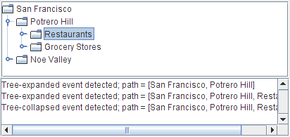

Lección: Escribiendo Listener Events
Sección: Implementando Listeners para los Eventos Comunmente Manejados
Cómo Escribir un Tree Expansion Listener
Algunas veces cuando usa un árbol, podría necesitar reaccionar cuando una rama se expande o se colapsa. Por ejemplo, podría necesitar cargar o salvar datos.
Dos clases de listeners informan de las ocurrencia de expansiones y colapsos: los tree expansion listeners y los tree-will-expand listeners. Esta página describe los tree expansion listeners. Vea Cómo Escribir un Tree-Will-Expand Listener para una descripción de los Tree-Will-Expand listeners.
Un tree expansion listener detecta cuando ya se ha producido una expansión o un colapso. En general, debe implementar un tree expansion listener a menos que necesite evitar que ocurra una expansión o colapso.
Este ejemplo demuestra un tree expansion listener simple. El área de texto en la parte de abajo de la ventana muestra un mensaje cada vez que ocurre un evento de expansión del árbol. Es una demostración simple y sencilla. Para ver una versión más interesante que puede bloquear expansiones, vea Cómo Escribir un Tree-Will-Expand Listener.

Intente esto:
-
Pulse el botón Lanzar para ejecutar TreeExpandEventDemo usando
Java™ Web Start
(
descargue KDJ 7 o posterior
). Alternativamente, para compilar y ejecutar el ejemplo por sí mismo, consulte el
índice de ejemplos.

- Expanda un nodo. Se dispara un evento de expansión en el árbol.
- Colapse el nodo. Se dispara un evento de colapso en el árbol.
El código siguiente muestra cómo el programa maneja los eventos de expansión. Puede encontrar el código fuente
para este ejemplo en
TreeExpandEventDemo.java
.
public class TreeExpandEventDemo ... {
...
void saySomething(String eventDescription, TreeExpansionEvent e) {
textArea.append(eventDescription + "; "
+ "path = " + e.getPath()
+ newline);
}
class DemoArea ... implements TreeExpansionListener {
...
public DemoArea() {
...
tree.addTreeExpansionListener(this);
...
}
...
// Required by TreeExpansionListener interface.
public void treeExpanded(TreeExpansionEvent e) {
saySomething("Tree-expanded event detected", e);
}
// Required by TreeExpansionListener interface.
public void treeCollapsed(TreeExpansionEvent e) {
saySomething("Tree-collapsed event detected", e);
}
}
}
La IPA de Tree Expansion Listener
La Interfaz TreeExpansionListener
TreeExpansionListener no tiene clase adaptadora.
| Método | Propósito |
|---|---|
| treeCollapsed(TreeExpansionEvent) | Llamado justo después de que un nodo del árbol colapse. |
| treeExpanded(TreeExpansionEvent) | Llamado justo después de que un nodo del árbol se expanda. |
| Método | Propósito |
|---|---|
| Object getSource() | Devuelve el objeto que disparó el evento. |
| TreePath getPath() | Devuelve un objeto
TreePath que identifica cada nodo desde la raíz del árbol al nodo
expandido/colapsado, inclusive.
|
Ejemplos que Usan Tree Expansion Listeners
La tabla siguiente lista los ejemplos que usan tree expansion listeners.
| Ejemplo | Dónde Está Descrito | Notas |
|---|---|---|
TreeExpandEventDemo
|
Esta Sección | Muestra un mensaje siempre que ocurra un evento de expansión en el árbol. |
TreeExpandEventDemo2
|
Cómo Escribir un Tree-Will-Expand Listener | Agrega un tree-will-expand listener a TreeExpandEventDemo. |